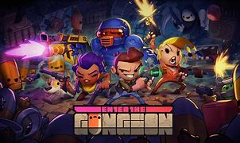
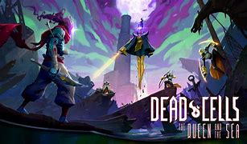
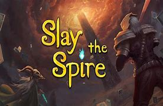
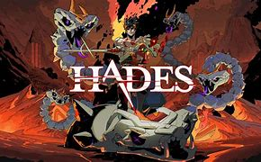
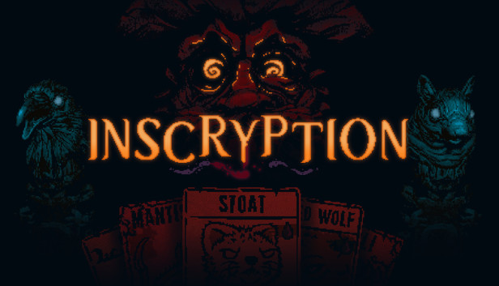

Bullet Hell é um termo usado para se referir a uma quantidade absurda de projéteis na tela, comumente visto em jogos de tiro frenéticos.
ROGUELIKES / ROGUELITES
Enter The Gungeon

Enter The Gungeon é um dos melhores de seu gênero. Com chefes únicos e desafiadores e salas dominadas por um bullet hell, sua gameplay e mapa se baseiam em andares, pelos quais o jogador vai descendo e adentrando no Balabirinto cada vez mais. O jogo está disponível na Steam por R$46,99, mas se encontra em todas as plataformas principais.
Dead Cells

Com um combate desafiador e extremamente marcante para qualquer um que jogue, Dead Cells é, possivelmente, um dos jogos mais viciantes apresentados aqui. A imensa variedade de armas e seus tipos, inimigos, mutações, estilos de jogo e caminhos para tomar até o chefe final, torna toda run única. E embora não possua história praticamente nenhuma, sua gameplay compensa e muito com tamanha qualidade! Ele está presente na Steam por R$23,74, e também em todas as plataformas principais.
Uma run é um termo muito usado para se referir a uma tentativa, uma "corrida". É muito usado em roguelikes, onde cada tentativa é chamada de uma run.
Slay The Spire

Slay The Spire é o já icônico e renomado jogo de cartas que inspirou tantas outras aclamadas obras. Mesmo sendo um pouco frustrante por não haver quase evolução nenhuma de uma run para outra, ele consegue te motivar a tentar mais uma vez, após ter aprendido algo novo e ganhado experiência na última tentativa! Com certeza é um jogo indispensável para qualquer amante de jogos de turno. É encontrado na Steam pelo valor de R$25,49, mas está presente em todas as plataformas principais.
Uma run é um termo muito usado para se referir a uma tentativa, uma "corrida". É muito usado em roguelikes, onde cada tentativa é chamada de uma run.
Hades

Provavelmente o roguelite que mais furou a bolha desse gênero, que é, inegavelmente, bem nichado. Assim como Baldur's Gate III fez com RPGs de turno, ou Elden Ring fez com Souslikes, Hades é amado até por quem não gosta desse estilo de jogo! Com uma história lindíssima e completa e uma gameplay extremamente viciante de hack 'n' slash em variados ambientes, esse jogo tem um belo motivo para ser um dos mais populares roguelites. Hades está presente na Steam pelo valor de R$73,99, e em todas as plataformas principais.
RPGs de turno, nos Videogames, tentam simular o que este gênero é na vida real, com jogos de tabuleiro. Embora possua muitas variações, este gênero consiste, em suma, em batalhas por turno, normalmente com uma quantidade limitada de ações.
Inscryption

Inscryption é uma produção de 2021 extremamente misteriosa e macabra. Com uma atmosfera sombria, consiste num jogo de cartas por contra um desconhecido personagem, e uma história única, num ambiente bizarro. Na Steam, se encontra por R$49,99, mas está disponível em todas as plataformas principais.